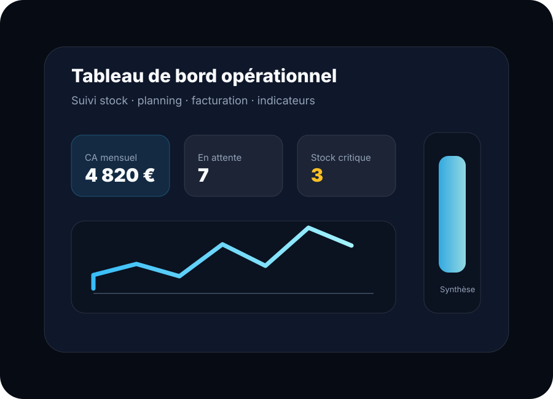
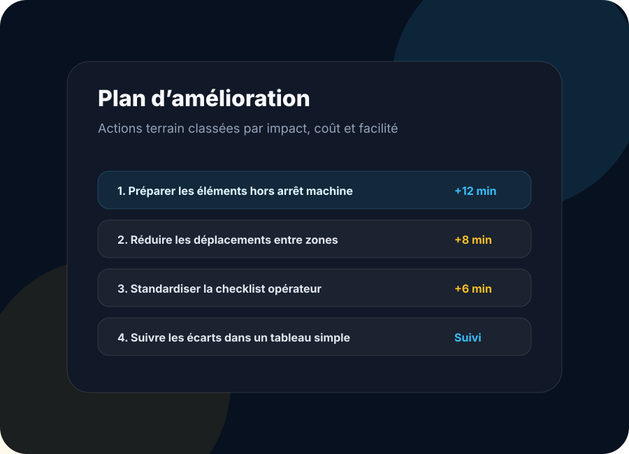

Analyse des flux
Repérer les allers-retours, les attentes, les zones mal placées et les étapes qui ralentissent le travail.
Process
Process aide les entreprises, ateliers, lieux recevant du public et petites structures à gagner du temps, clarifier leur organisation et mieux suivre leur activité.

Terrain
Process part du terrain : qui fait quoi, dans quel ordre, avec quelles contraintes, quels déplacements et quelles pertes de temps. L’objectif n’est pas de théoriser, mais de rendre le fonctionnement plus fluide.
Repérer les allers-retours, les attentes, les zones mal placées et les étapes qui ralentissent le travail.
Identifier ce qui peut être préparé avant, simplifié, déplacé ou standardisé pour réduire l’arrêt ou le temps perdu.
Réfléchir à l’implantation d’un poste, d’une zone technique, d’un bar, d’un espace événementiel ou d’un atelier.
Prioriser les améliorations selon l’impact, le coût, la simplicité de mise en place et les contraintes terrain.

Exemples d’intervention
L’amélioration peut concerner une ligne de production, un atelier, une réserve, une installation événementielle, une boîte de nuit, un restaurant ou un espace technique. Dès qu’il y a des déplacements, des tâches répétitives et du matériel à organiser, il y a matière à optimiser.
Outils
Les outils arrivent après l’analyse : Excel, Google Sheets, mini-sites, formulaires, checklists ou usages IA simples. Le but est de suivre l’activité sans créer une usine à gaz.

Suivi stock, devis, factures, paiements, planning, production, maintenance et indicateurs.

Actions classées par gain attendu, difficulté, coût et faisabilité.

Pages simples, aides à la décision, checklists et automatisations utiles pour gagner du temps.
Méthode
Échange sur le besoin, les contraintes, les utilisateurs et le résultat recherché.
Analyse terrain, repérage des temps perdus, déplacements et points de blocage.
Proposition d’actions, outils, checklists, tableaux ou aménagements adaptés.
Mise à disposition d’une solution claire, compréhensible et réellement utilisable.
Process
Le besoin peut partir d’un temps trop long, d’un poste mal organisé, d’un fichier difficile à utiliser ou d’un suivi inexistant.
Décrire le problème